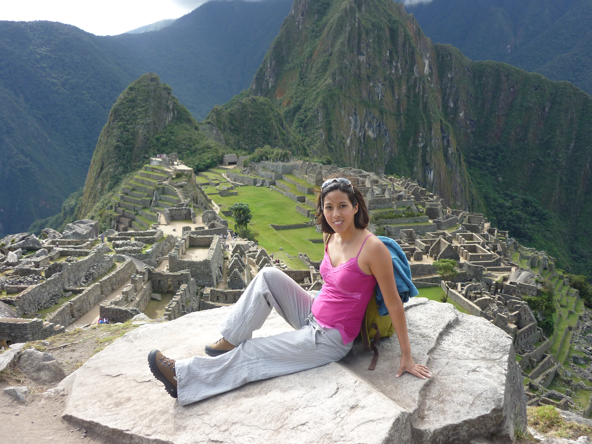
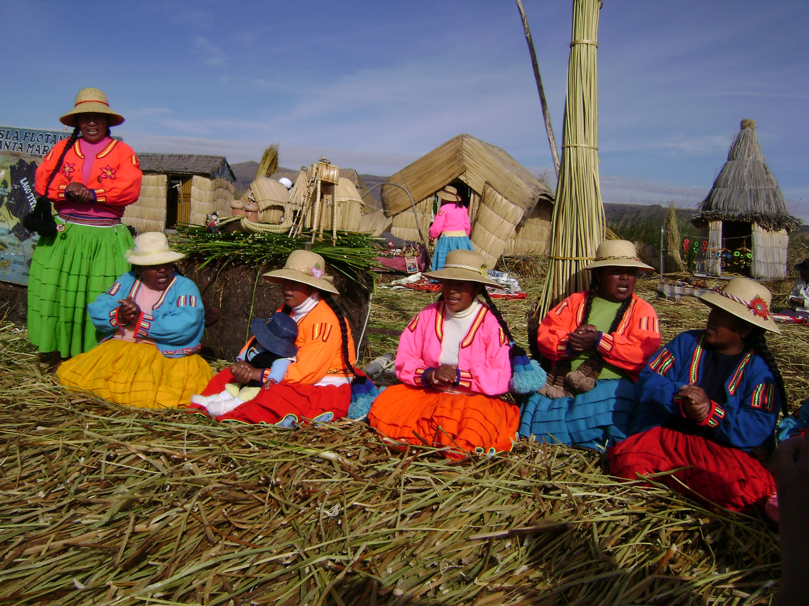

Peru: het land van de Inca's, maar ook het land waar mijn roots liggen. Tien jaar geleden ben ik er voor het eerst terug geweest. Wat een mooie bijzondere ervaring was dat. Natuurlijk had ik mij wel een voorstelling gemaakt van hoe het land eruit zou zien, maar het is het toch anders als je er werkelijk bent . Dan pas is het "echt". Ik heb veel gezien en bezocht. Face to face met een enorme condor zwevend boven mijn hoofd. Met lama's lopend door Machu Picchu. Genoten van het heerlijke drankje Pisco Sour. Een avontuur vol mooie, maar ook emotionele momenten. Nu ik een gezin heb is mijn grote wens om hen dit alles te laten zien en beleven.

